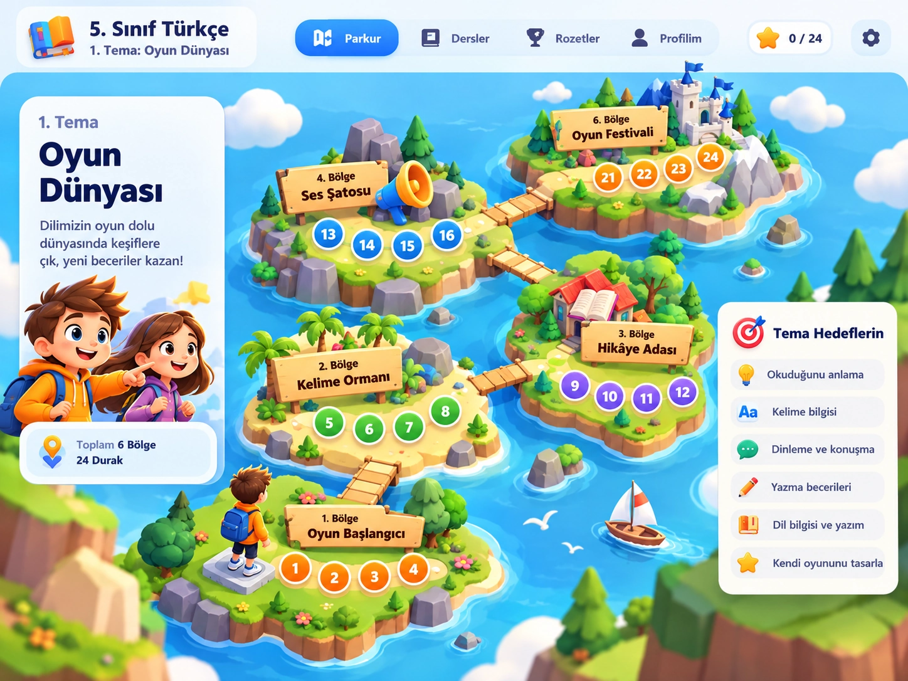

Bir durağa dokunarak etkinliği aç. Gri olmayan duraklar sırayla açılır; tamamladıkların yeniden oynanabilir. İlerleme bu cihazda saklanır.
Oyunlar
1. Tema: Oyun Dünyası için oyunlarla tekrar yap.
5. Sınıf
1. Tema: Oyun Dünyası
Sınıf ve Tema
Şimdilik yalnızca 5. sınıf 1. tema aktif. Diğer temalar zamanla eklenecek.
5. Sınıf • 1. Tema: Oyun Dünyası
24 duraklı aktif parkur
2. TemaYakında
3. TemaYakında
4. TemaYakında